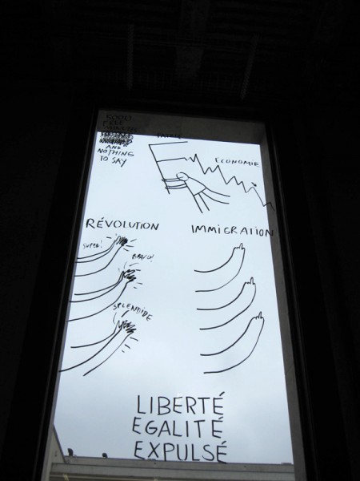
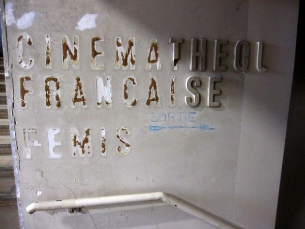
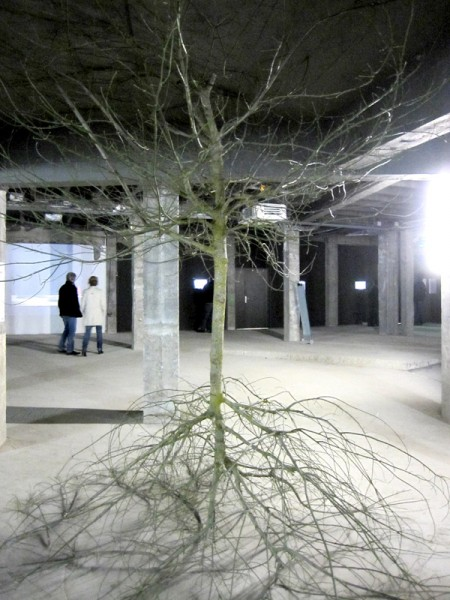

-
Letter From Paris: “Intense Proximity” and the Question of Audience
by Benjamin Evans May 8, 2012
Benoit Pype's 'Fabrique du résiduel.' Photo by Benjamin Evans.
The contemporary Italian philosopher Giorgio Agamben has recently drawn attention to the insistence by most philosophers that art be approached from a position of disinterest, as it generally has been since at least the time of Kant. This intellectual preoccupation with the idea of a neutral position for approaching art has resulted, according to Agamben, in an artworld that is not only disconnected from the social and political sphere, but also to some extent one which even celebrates this disconnection and glories in art’s “autonomy.”
The work on view at Intense Proximity, the 2012 Paris Triennale, might initially be seen as an attempt to address this situation. It brings together the work of several generations of artists from all over the globe, all working in diverse media and contexts. Almost all of them share a concern for connecting their work to broader social or ethnographical issues. The exhibition is intended to blur lines between artistic and ethnographic investigation, and rather than address, in the words of its curators, questions of “how we might share a common space or live together,” it aims to address “the more salient question of how to live with disjunction.” At some level, the exhibition is overtly an attempt to engage in issues of broader public concern, to engage in an interested art.
Yet — much of the structure of this massive exhibition contradicts this apparent concern. First of all, I’d like to ask: “who is the audience of this exhibition?” The obvious answer, given that it is held at a huge public art gallery is: The General Public. In particular, the public who live in a world of mixed cultures growing increasingly close to one another.
The sheer size of the exhibition argues against this simple answer. Even if one ignores the six other venues and concentrates just on the central core of the exhibition at the eye-boggling new Palais de Tokyo space, there is an enormous amount of work to be considered. Furthermore, this is not simple work meant to delight the senses with aesthetic pleasures, but work that requires thought, interpretation, and investigation — work that demands that the viewer take time. Supposing one gave each of the 113 artists ten minutes each, it would take almost nineteen hours to see the show (perhaps three six hour days?). Of course, much of the video-based work demands much longer than ten minutes — the combined total video is over 729 minutes (over twelve solid hours). What members of “the general public” could be expected to invest this sort of time and energy?
This sort of criticism might seem silly — nobody goes to a gallery with a stopwatch and gives ten minutes to each artist, and nobody watches all the video. Especially at gargantuan spaces like this one, people wander around looking vaguely at different things, approaching and dwelling on individual works or installations that catch their eye. The assorted artworks all compete for attention, and generally the ones with more obvious punchlines, more graphic content, or more easily digested material win a slightly prolonged gaze. For most people the goal is to “complete” the exhibition in a reasonable time frame (say, three hours?). They only concentrate on a few well chosen works.
If such is the case, does it make sense to present so much demanding work in the same place at the same time? The inevitable result is that I am forced to make a choice. Either I do my best to respond with the concentration and respect demanded by each work, or I must be selective and walk blithely past works that call out not to be ignored. Given the political stakes involved, I am caught in a serious challenge: ignoring work about slavery, warfare, revolution, exclusion, death, and otherness is itself a political act. Yet the curators seem to leave me with little choice. The context forces viewers to trivialize the complex politics at stake by asking us to browse a Wal-Mart of issues.
This isn’t simply a matter of quantity, but also one of quality, of the varied and demanding contents involved. Another contemporary philosopher, Jean-Luc Marion1 is relevant here. In his thinking about television, Marion argues that we are phenomenologically unequipped to experience the world presented by television. In the act of watching TV, we might jump from a golf game to a documentary about ancient Rome to The Simpsons to a cake-decorating competition to news about a conflict zone in the Middle East to numbers from the stock market. This constant jumping geographically and temporally renders the world effectively uninhabitable by creatures built the way we are — we just don’t have the equipment to apprehend (let alone comprehend) such a place. Similarly, Intense Proximity bombards the sensitive viewer with material of such ethnographic diversity that they cannot possibly process it all. Bewilderment is the only response. Perhaps this is an important result in itself, to throw a wrench into any simple why-can’t-we-all-just-get-along attitude. But as it poses no alternative response, I’m unfortunately left feeling disempowered, that ignorance is indeed bliss.
Dan Perjovschi. Photo by Benjamin Evans.
There is further evidence that the General Public is not the intended audience for this show. Frazzled by the rather daunting task of having to assimilate (or at any rate experience) so much divergent material, and challenged by the unfamiliarity of much of the work on display, a determined visitor might turn to the ten-euro “exhibition guide” for assistance in understanding and contextualizing his/her experience. Here, however, one encounters sentences like,“Every curatorial process begins its appointment with these contending positions, particularly in the midst of epistemological uncertainty and cartographic instability that governs not only the production of art, but also the circulation of signs.”
and,
“We wanted to construct the project topoi as a field of contending discourses.”
These are sentences addressed to people who have read Foucault, Lyotard, Barthes and, perhaps, even Derrida. Is it reasonable to assume that the General Public (even the French general public) is familiar with the cartographic instability that governs the production of art, or even know what project topoi might be?
This kind of language renders the author a specialist, much the same as physicists who effortlessly use words like superposition states and scalar bosons. Physicists are expected to know these terms, but are not expected to discuss them with a general public very frequently. To be clear: I’m fine with the idea of artists (or philosophers) having their own specialized, expert vocabulary, as some of the questions involved in such subjects are just as complicated as particle physics (viz. Kant). In my line of work, it is sometimes useful to have terms like epiphenomenalism, aporia, or possibly even Dasein. But if the goal is to interact with the general public, this kind of language is downright irresponsible: it simply alienates the intended audience, communicating only a message of intellectual difference. This show takes place in a public space, with an explicit concern for matters concerning the public sphere (living with disjunction, cultural representations, etc). It is a show about culture, politics, and people. How then can the curators justify leaving so many people behind?
The conclusion is that the show is not actually for the general public, but for a small minority group concerned with contemporary art. This is revealed implicitly in the manner described above, and also revealed explicitly in their text. The curators themselves state that they are concerned with
which artistic positions gain preeminence and which, therefore, possess the requisite access into the forest of signs that define the landscape of contemporary art in the era of neo-liberal capitalism.
In simpler words, they’re interested in the artworld, and who gets to have a voice within its complex structures of power. Certainly the ongoing project of dismantling the white, western, male paradigm of the artworld has merit. Yet if this is the case, it appears we are right back where we began: with Agamben’s apparently justified concern about an artworld that seems only to care about itself, deliberately and gloriously autonomous from any broader public concerns. Again, I must ask: If one is genuinely concerned with the politics of multicultural disjunction, why target the tiny and generally ineffectual cultural group that takes in interest in contemporary art2 ? Why not try to engage with the General Public?
I realize some of my remarks on public accessibility might seem applicable to any large blockbuster show, and that any number of spaces (including my own) could be criticized for the use of elitist “expert” vocabulary. Yet I insist: this show is particularly open to these charges because of the contradiction between what it claims to attempt, and what it achieves. If an elitist gallery wants to use highly specialised language to sell expensive objects, I have no objection (or rather, my objections are entirely different and much weaker). But to raise complex issues of identity and representation, relevant to pretty much everyone on earth, you cannot open an elitist shopping mall of ideas advertised with jargon. It is like making a Disneyland ride about world poverty: the format contradicts the message.
Photo by Benjamin Evans.
Still, it might be said that these remarks concern general curatorial strategies, rather than the work itself. In this show, however, curatorial decisions are almost impossible to ignore. Standing at the entrance to the Gallery Basse (the dark space in the lowest basement) I was able to hear competing audio from five video projections. Arab dance music (Hassan Khan) vied with a Roma street-musician (Alfredo Jarr) while an apartment building collapses behind it all (Bertille Bak). Singularly: worthwhile. In such Intense Proximity: aggravating.
The feeling reached such a point, that one of my fellow visitors couldn’t take it anymore and went to explore the fruit and vegetable market outside. A summary of her comments: “This is awful, I can’t look at this. So much death and war and crime and pain…It’s so aggressive!” Being in a basement with no discernible exits, with walls painted black and lights down low certainly didn’t help alleviate the sense of claustrophobia and panic. There is, of course, a noble tradition in art of attempting to shake bourgeois consciousness from its slumber by presenting it with material it doesn’t much want to see, but in this context the result is not progressive dialogue but despair.
My companion was right: there is a lot of death represented here, a great many photographs, videos, and installations making use of corpses for artistic ends (Closky, Delahaye, Jarr, Hirschorn, Sarkis, Toguo). Additionally, African masks appear with considerable frequency (Evans, Weems, O’Grady, Sarkis, Adeagbo), mixed with images of American political power (Jarr), disco dancing (Piper), watermelon seeds (Cannel), prostitutes (Moulène), and slaves (Weems). And of course you can buy a Rikrit shirt at the Gavin Brown shirt factory. If you want difficult issues, here you can find them by the pound.
Even so, from this swirling melancholy din, moments of art still managed to happen. Annette Messager’s empty but mysterious creatures floating around on currents of air strangely provided both relief and hope. Dan Perjovschi’s simple window graffiti cleanly, clearly, and unpretentiously poked at issues buzzing in the contemporary buzzworld. I was very pleased to come across a boring pile of sheets next to the name Jason Dodge. Mystified, I obediently read the description in my guide, and then meditated on the thousands of people who have slept on those sheets (they are replaced weekly by a hotel laundry service). I thought Jewyo Rhi’s Wall to Talk was brilliant — a low-tech creation of giant typewriter arms with home-made word stamps rather than letters, here narrating a disjointed but familiar text:offered the beaten taxi driver, big black man, police asked, Thinking of his blooded face. Mihut Boscu’s strange video installation appeals to me, dealing as it does with the history of corpuscularianism and fantasy science. It is also pretty hard to argue with David Hammons ’ Rock Heads work: smart, aesthetic, ingenious, simple, politically charged and understated. Bertille Bak, a young French artist, documented a song of protest being played by pulses of light from the windows of a condemned Thai apartment block, resulting in a poetic but powerful installation.
Cecile Beau. Photo by Benjamin Evans.
Don’t get me wrong: there is some good work here. My best in show goes to a young artist not even included in the Trienniale, but on display as part of the Modules — Fondation Pierre Bergé — Yves Saint Laurent program. Winner of the Prix Découverte des Amis du Palais de Tokyo, Cécile Beau’s Subfaciem included a seamless tree growing both upwards and downwards, and stalactites and stalagmites made from refrigeration systems. Benoit Pype, another young artist in this program, has taken over an immense space on the main floor for the fabrication of his miniature dust-sculptures, using it as a studio while the public peer curiously at his tiny work through magnifying glasses. Both are poets in the larger sense of the term, and in my view remind us of what art does best.
Likely a great deal of the work in this show, including the most graphic (Hirschorn) or most difficult (Weems?) would make a much stronger impact if shown in a more respectful context. As I look through the gallery guide and read some of the descriptions of the work3 , I see much that looks interesting, that calls for investigation up close, and it is unfortunate that I missed these in my two separate visits. Given the context, such invisibility seems inevitable. Perhaps the reader is best advised to just pick up the catalog and read for a few hours. Such is the fate of art in the age of the political theme-park show.
Finally: I could have filled this entire essay talking about the utterly bizarre new Palais de Tokyo space. (To give you an idea of the strangeness, another comment from my companion: “I feel like I’m in Sarajevo during the war”). But given that I can’t get into detail, let me just say that I disagreed with my companion. This awesome new playground and its abandoned factory aesthetic makes the price of multiple admissions worthwhile, whatever the status of its contents.
– April, 2012
- See The Blind at Shiloh in “The Crossing of the Visible”, James Smith Tr, Stanford University Press 2003 [↩]
- This is not a pot-shot at the denizens of the artworld. The people who are interested in hot-rods, model trains, fashion magazines or hockey are also pretty ineffectual insofar as those interests go. [↩]
- and to be fair, many of these descriptions are in much better prose than the main essay [↩]